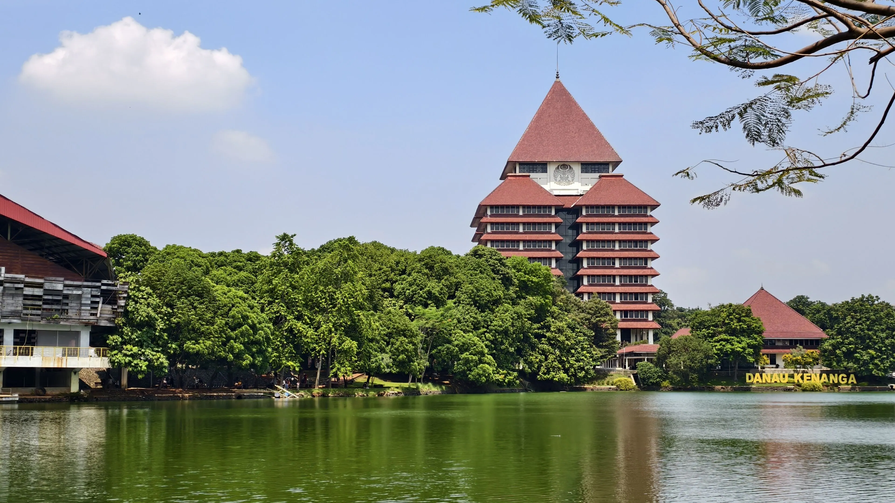
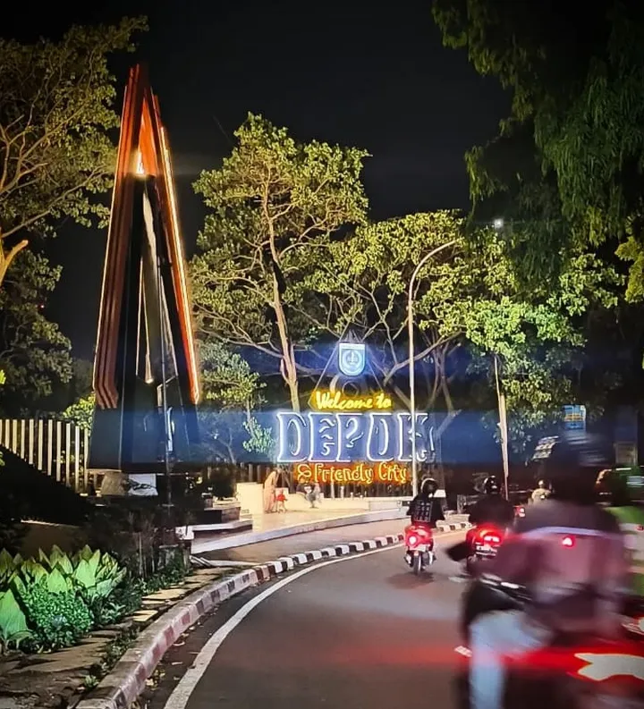

WHERE I COME FROM
Depok
Depok is a city in West Java, Indonesia. It is located between Jakarta and Bogor and is known as one of the cities surrounding the capital area.
Depok is also home to various educational institutions, culinary spots, and interesting places to visit.
Fun fact: Depok is home to the famous Buaya Depok folklore, making crocodiles an unexpected part of its local identity.
GALLERY
Depok in pictures

